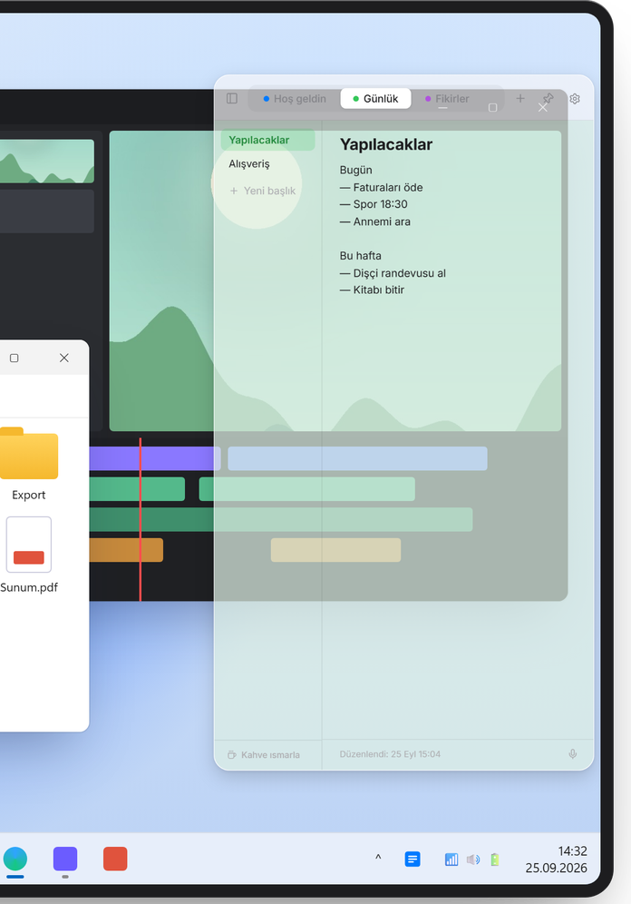
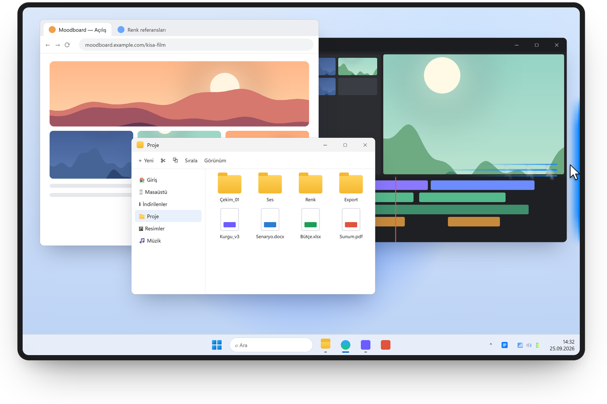
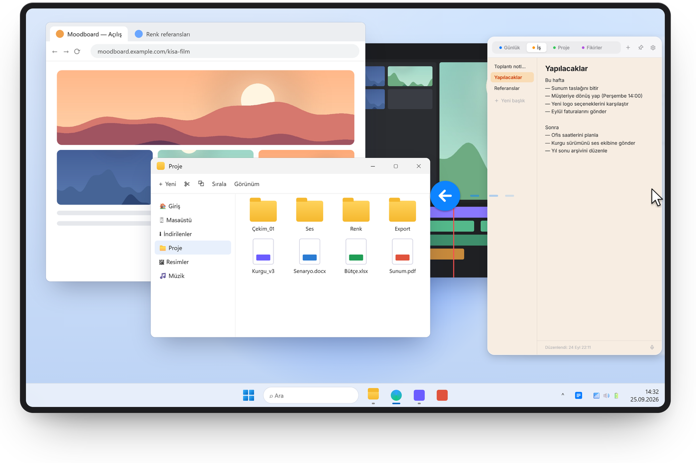
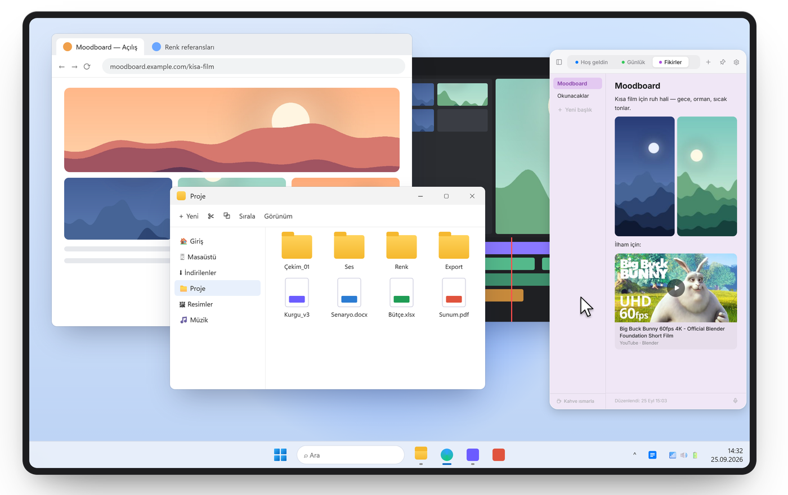
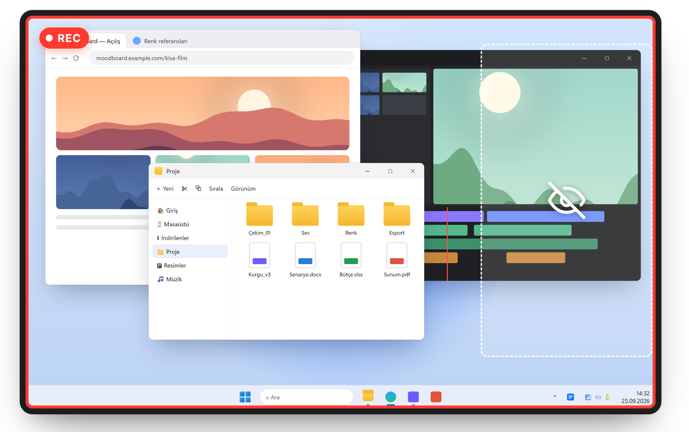
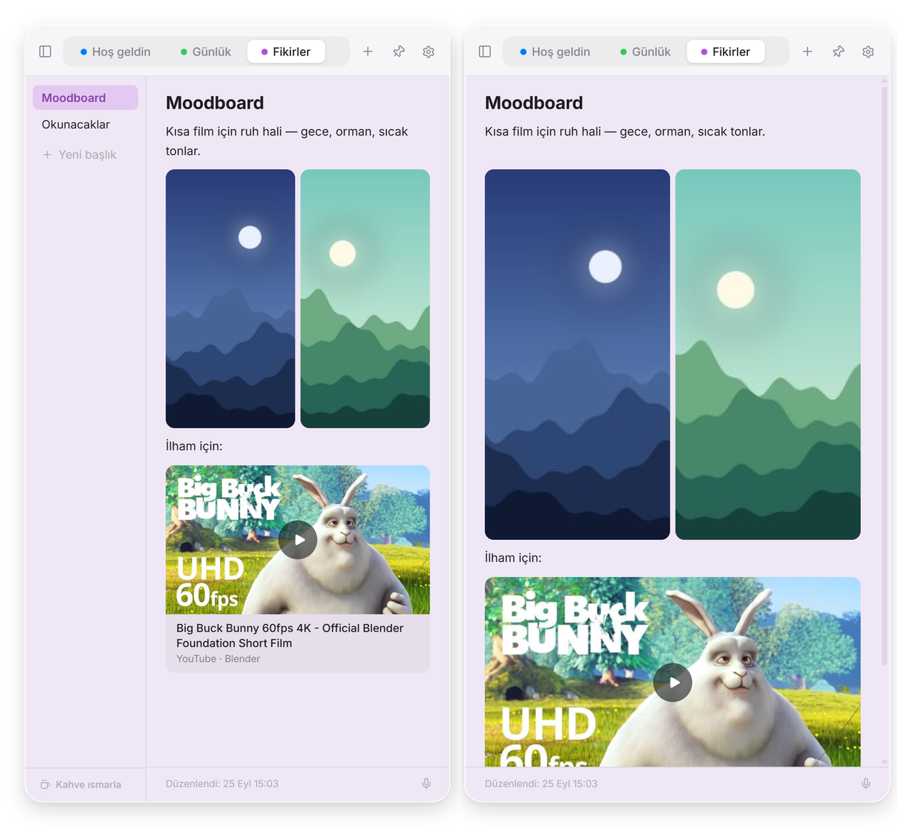
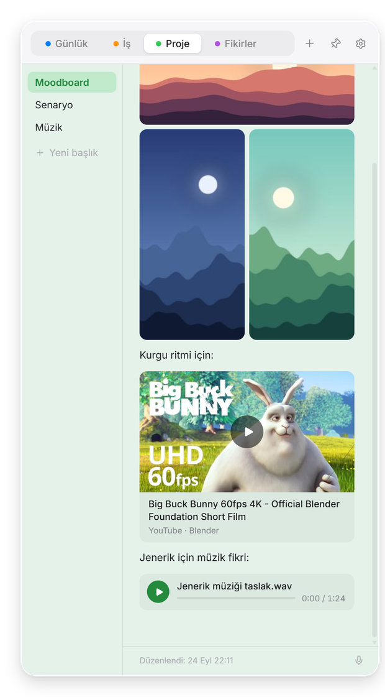
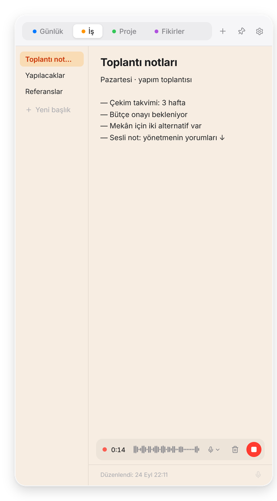
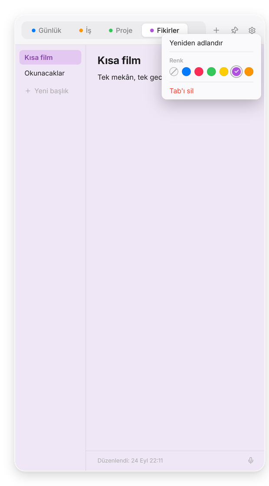

Yeni · Opaklık
Arkasını gör.
Panelin zeminini %60 ile %100 arasında saydamlaştır. Yazılar, görseller ve düğmeler net kalır; sadece altındakinin biraz görünür. Ayarlar → Görünüm → Opaklık.

Fareyi ekranın sağ kenarına götür, notların kayarak gelsin. Uzaklaş, kaybolsun. Windows için ücretsiz.
Diğer seçenekler: Kurulum (ZIP) Taşınabilir (ZIP, kurulumsuz) Tüm sürümler
Sill Note · Ücretsiz · Windows 10 ve 11 · Hesap yok · v1.3.0


1.3’te yeni
Tek bir anahtarı aç, Sill Note ekran kayıtlarından, ekran paylaşımından ve ekran görüntülerinden kaybolsun — Zoom, Teams, Discord, OBS. Sen yine her zamanki gibi görürsün; toplantının ortasında bile notların yanında.


Ayarlar → Gizlilik → Ekran paylaşımında gizle. Windows 10 (sürüm 2004) ve sonrasında çalışır. Ekranını bir kameradan veya görüntü yakalama kartından gizleyemez.
Yeni · Opaklık
Panelin zeminini %60 ile %100 arasında saydamlaştır. Yazılar, görseller ve düğmeler net kalır; sadece altındakinin biraz görünür. Ayarlar → Görünüm → Opaklık.

Yeni · Odak
Sol üst köşedeki kenar çubuğu düğmesine tıkla, başlık listesi kayarak gitsin ve notun tüm paneli kaplasın. Bir daha tıkla, geri gelsin.

Medya
Görsel sürükle, ses dosyası bırak, YouTube linki yapıştır. Hepsi yazının yanında, notun içinde durur.

Sesli not
Tek tıkla sesli not, canlı dalga ile. Kayıt sırasında mikrofon değiştir. Durdurduğun an mikrofon kapanır.

Düzen
Üstte ana başlıklar, solda notların. Renklendir, adlandır, sürükleyip sırala. Açık ve koyu tema.

Gizlilik
Hesap yok, bulut yok, takip yok. Her şey senin bilgisayarında durur. Gizlilik politikasını oku.

Diller
English, Türkçe, Deutsch, Français, Español, Português, Italiano, Русский, 日本語 ve 简体中文. Sill Note, Windows’un dilini kendiliğinden takip eder.
Doğrudan indirilen kurulum henüz imzalı değil, bu yüzden Windows ilk seferde uyarır. Ek bilgi → Yine de çalıştır. Yakında gelecek Microsoft Store sürümü Microsoft tarafından imzalı olacak, bu uyarı çıkmayacak.
Fareyi ekranın sağ kenarının ortasında bekletmen ya da Ctrl + Alt + N’ye basman yeterli. Kısayolu Ayarlar’dan değiştirebilirsin.
Sadece bir YouTube linki yapıştırdığında: Sill Note o videonun küçük resmini ve başlığını bir kez indirir. Ayarlar → Gizlilik’ten kapatabilirsin.
Windows için indir çoğu kişi için doğru seçim: kurulum dosyasıdır, yönetici izni istemez, Başlat menüsüne eklenir. Kurulum (ZIP) aynı dosyanın sıkıştırılmış hâli; tarayıcın ya da e-posta servisin .exe indirmeyi engelliyorsa işine yarar. Taşınabilir sürüm kurulum gerektirmez: ZIP’i istediğin klasöre aç, Sill.exe’ye çift tıkla. Notlar üç sürümde de aynı yerde durur.
Evet. Kaynak kodun tamamı GitHub’da herkese açık; programın tam olarak ne yaptığını herkes okuyabilir. Gizli bağlantı, takip ya da arka planda yükleme yok — internete çıktığı tek yer isteğe bağlı YouTube önizlemesi. Microsoft Store sürümü de yayınlanmadan önce Microsoft tarafından incelenir.